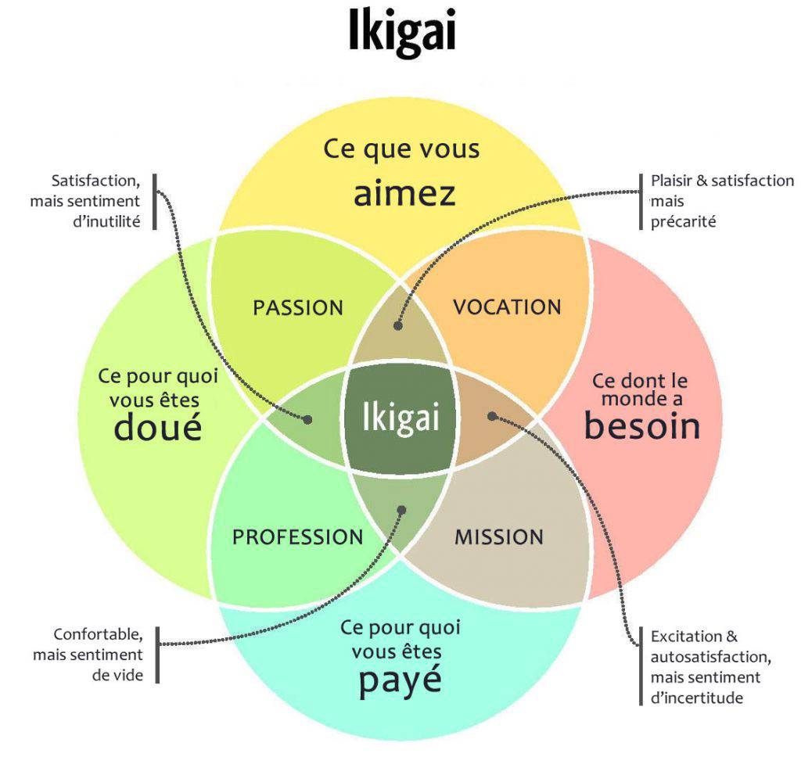

Nous sommes nombreuses et nombreux à ne pas nous reconnaître dans le modèle pré-dominant actuel de l'entreprise : manque de valeurs, de sens, de respect de l'humain, absence de réflexion sur la contribution à l'amélioration du vivre-ensemble.
Ikigai est un groupe d'échange et d'entre-aide à Nantes pour celles et ceux qui cherchent à créer une entreprise qui a pour coeur la réalisation de leurs aspirations, convictions ou passions.
Il s'agit de se créer un entourage créatif, motivant et bienveillant pour créer ou concrétiser un projet : trouver des idées, chercher des solutions à des difficultés rencontrées, des collaborateurs ou collaboratrice, avoir des retours sur ses idées, partager des expériences, se motiver.
Ikigai se propose aussi comme objectif d'organiser ponctuellement des meet-up avec des personnes qui ont atteint cet objectif pour s'inspirer de leur expériences.

Le premier évènement aura lieu le 15 octobre prochain à Nantes ( le lieu reste à préciser ), nous aurons le plaisir d'accueillir Olivier Demaegdt, un entrepreneur pas comme les autres ( en apprendre plus sur lui : https://newsroom.startup-palace.com/masterclass-12-avec-olivier-demaegdt-parcours-dun-serial-entrepreneur-9cf03474f479 )
Si vous souhaitez être averti·e par mail du prochain évènement ( drink ou meet-up ) en m'envoyant un message via la page de contact, en indiquant "je suis intéressé·e par le prochain évènement" dans le champ commentaire.